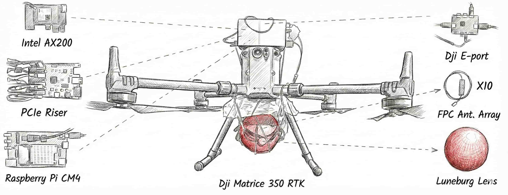
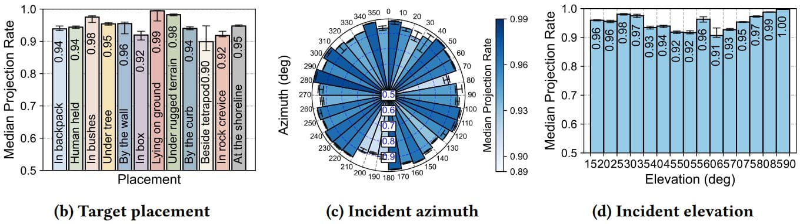
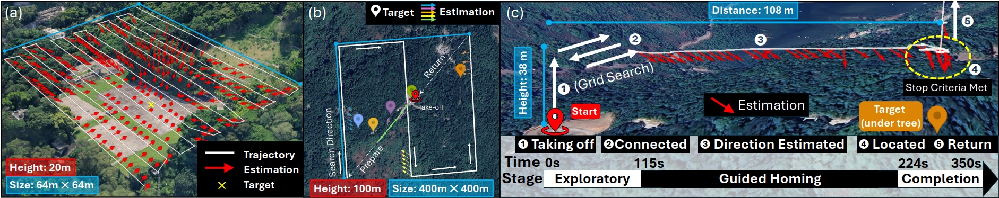
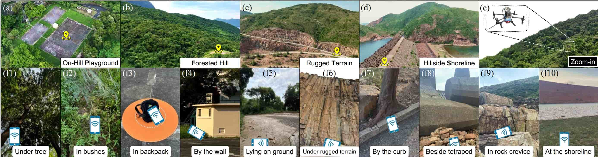

A Drone-based Wireless System for Wilderness Search and Rescue
(This work is conditionally accepted by MobiCom 2026! 🎉🎉)
Tree canopy creates visual obstruction, even infrared is difficult to penetrate for identification [2]
Find lost person through Wi-Fi device; identify via auto-connection




Range Extension
Median Angular Error
Discovery Rate
Localization Accuracy